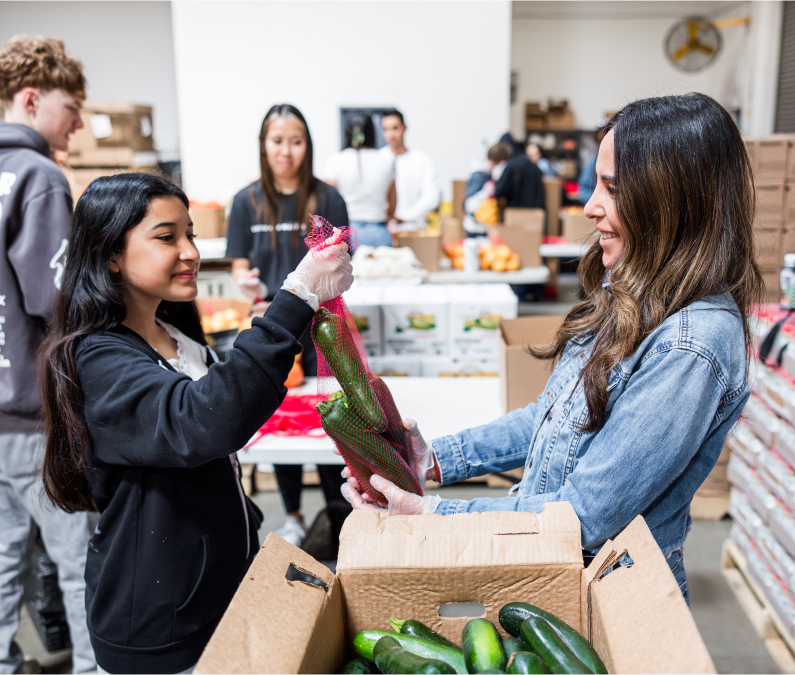

Menos desperdício
Alimentos excedentes encontram um novo caminho antes de serem descartados.
Uma rede contra o desperdício
O Mata Fome conecta restaurantes, mercados e produtores locais a ONGs e famílias cadastradas, para que o alimento excedente chegue à mesa de quem precisa.

Alimentos próprios para consumo acabam descartados enquanto pessoas e instituições enfrentam dificuldades para manter a mesa abastecida. O Mata Fome aproxima esses dois lados com mais organização, agilidade e transparência.
Alimentos excedentes encontram um novo caminho antes de serem descartados.
Doadores e instituições locais se encontram em um só lugar.
Uma rede colaborativa fortalece quem precisa de apoio na comunidade.
É simples fazer parte
Mercados, restaurantes e produtores informam quais alimentos podem compartilhar.
Instituições e famílias identificam as doações disponíveis na sua cidade.
Os alimentos são retirados ou entregues e seguem para quem mais precisa.
Impacto em movimento
Os números são calculados a partir dos cadastros e solicitações salvos neste navegador.
Doadores e instituições
Para quem precisa
Famílias e instituições cadastradas podem pedir alimentos. Mostramos os doadores disponíveis na sua cidade.
Quem já participa
Depoimentos ilustrativos para demonstração do projeto.